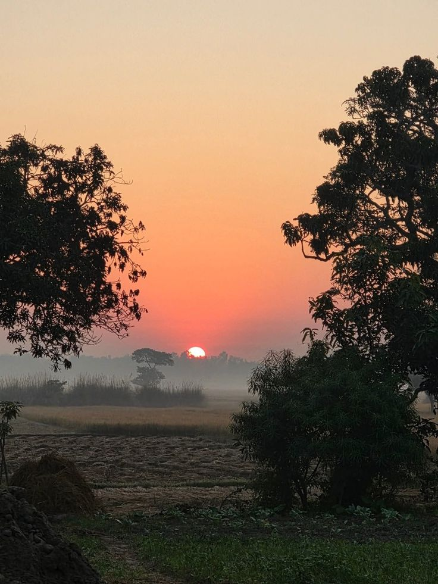

Tripura Land Unit Converter: Single-Click Multi-Parser Grid
Multiple units jaise Hectare, Acre, Traditional Kani aur Ganda ko ek sath jodkar automatically sateek report aur printer copy generate karne ka digital machine model.
1. The Critical Need for a Unified Land Unit Converter in Tripura
Tripura land administration records aur asset evaluations framework me zameen ko check karne ka manual mapping framework kafi variation hold karta hai. Jab koi investor, kisan, ya property buyer **Jami Tripura Portal** par jakar apni Jamabandi ya RoR download karta hai, toh wahan area strictly **Hectare, Acre, aur Krishi Kani** me likha hota hai. Lekin javascript calculations setup standard layout format guidelines check kiya jata hai, toh zameen ka footprint **Traditional Kani aur Ganda** format me find out hota hai. Iske alaway urban pockets aur industrial zones property setups me transaction flat **Square Feet** parameters scale bohot zyada chalte hain.
2. Sizing Mathematics & Conversion Architecture of Tripura Revenue Board
Jami Tripura metrics calculation models ko completely secure tracking standards par run karne ke liye system backend matrix formulas execution niche gaye constants rules limits par map karta hai:
- Hectare Integration Level: 1 standard Hectare revenue manual ke compliance rules me exact **1,07,639.104 Square Feet** canvas size setup run chalta hai. Isme strict traditional metrics layout parameters mapping system backup load load handle hota hai.
- Acre to Traditional Kani Ratio: 1 full Acre contains precisely **43,560 Square Feet**, jo traditional conversion standards framework system rules ke mutabik lagbhag **2.5208 Traditional Kani** segments me matrix split load hold karta hai.
- The Tripura Kani & Ganda Benchmark: 1 absolute Traditional Kani holds **17,280 Square Feet** structure space limits, jo mathematical grid logic variables me flat exact 40 Ganda data configuration set karta hai. Metric system checks me 1 Ganda equals approximately **432 Square Feet**.
3. Tripura Land Unit Area Metrics System (Standard Matrix Table)
| Unit Name Designation | Area Scale in Square Feet | Area Scale in Square Meters | Conversion Arithmetic Baseline Factors Rules Matrix |
|---|---|---|---|
| 1 Ganda | 432 Sq. Ft. | 40.13 Sq. M | Standard base plotting element layout grid mesh constants |
| 1 Traditional Kani | 17,280 Sq. Ft. | 1,605.37 Sq. M | Strictly combined accumulation of exact 40 Gandas parameters |
| 1 Hectare Value Limit | 1,07,639 Sq. Ft. | 10,000 Sq. M | Comprises approximately 6.229 traditional Kani tracking elements |

💡 Practical Mathematical Conversion Example
Suppose you possess a distributed parcel consisting of 1 Hectare and additional 5 Traditional Kani configurations. Let's see how our engine aggregates this effortlessly:
- Baseline Hectare Metrics mapping: 1 Hectare = 1,07,639.104 Square Feet.
- Baseline Kani Metrics mapping: 5 Traditional Kani × 17,280 Square Feet = 86,400 Square Feet.
- Combined Operational Footprint Matrix: 1,07,639.104 + 86,400 = 1,94,039.104 Sq. Ft.
- Revenue Standards Format Conversion: The algorithmic dashboard parses this final calculation and flawlessly displays it as 11 Kani and 9.16 Ganda.
📖 How to Use This Multi-Parser Land Converter
Follow these simple steps to instantly compute complex local layout configurations:
- Identify your historical property configurations from your Jami Tripura RoR / Jamabandi document sheets.
- Enter the respective parameters directly inside the dynamic grid boxes above (Hectare, Acre, Traditional Kani, or Ganda). You can fill single fields or input mixed composite numbers simultaneously.
- Click on the "Calculate Total Land Area" button to compile the script matrices logic instantly.
- Utilize the advanced dashboard control options to seamlessly Copy data strings, share parameters over WhatsApp, or print structured **A4 physical records**.
5. 15 Important Frequently Asked Questions (FAQs) - Tripura Land Logic (Hinglish Matrix)
Copyright Notice © 2026 Shayan Smart Tools. All Rights Reserved. Is website application framework ka structural engine logic setup layout, math equations grid system, aur text documentation variables completely Muksidul Islam ke developmental engineering protection ke under safe managed hain. Unauthorized duplication or code scrapping is completely restricted and legally protected.